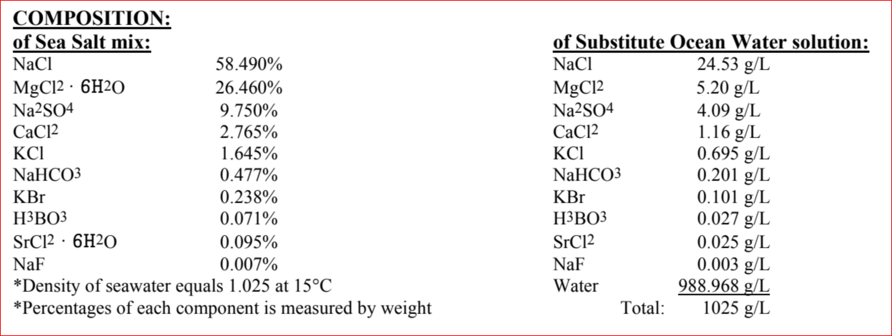

In order to study the effects of microplastic leachate we have to be able to re-create it in a controlled and defined way. For this, I partnered with Dr. Francesco Saliu and his lab of environmental chemists at the Universita degli studi di Milano-Bicocca in Milan, Italy. Dr. Saliu has been actively using mass spectrometry and solid-phase micro-extraction to identify and characterize the chemical toxins and bioactive compounds associated with microplastic pollution.
Dr. Saliu sent me 8 microplastic types that his lab used to create leachate that was later analyzed with mass spectrometry:
- LDPE , aged, <500 um
- LDPE, virgin, <500 um
- PP, aged, <500 um
- PP, virgin, <500 um
- PVC, <500 um
- PVC
- PTSO, recycled, aged
- PTSO, recycled, virgin
Each microplastic leachate type has a unique thumbprint or ‘signature’ of chemical makeup created via the leaching process and UV photodegradation. The microplastic type I am most keen to study is PVC.
So how do we use these microplastics to re-create the leachate solutions described above?
First we need to gather materials & equipment:
1 Materials & equipment list
- Fume hood
- Stir plate, shaker table, or flocculator with rpm control (90 rpm) for leachate ‘soak’
- Stir plate for dissolving salt in artificial seawater
- Ring stand
- Burette & burette clamp
- Glass funnels for burette and for erlenmeyer flask
- American Standard for Testing and Materials (ASTM) D1141-98 salt for artificial seawater, sold by Lake Products Company, LLC (buy here)
- 1 400 mL flask or beaker per leachate solution prep
- 1 1000 mL erlenmeyer flask for making artifical seawater
- scale accurate to 0.001 grams
- Large weigh boats for ~41 gram volume
- Metal scoopulas/spatulas for transferring salts and microplastics
- pH meter
- 0.1M hydrochloric acid (HCl)
- 0.1M sodium hydroxide (NaOH)
- Deionized water
- 1.2 um pore size glass fiber filters
- Locally sourced & filtered seawater
Then let’s clean & prep our lab space:
2 Lab prep
- Acid wash all glassware
The leachate preparation protocol for each microplastic type is as follows:
2.1 Step 1. Make artificial seawater
Prepare artificial seawater according to ASTM D1141-98 technical bulletin (buy salt for artificial seawater here)
The ASTM D1141-98
Sea-Salt mixand resultingSubstitute Ocean Water solutionshould have the following component breakdown:

In a 1-liter erlenmeyer flask, add 41.953 grams of ASTM D1141-98
Sea-Salt. Then add deionized water1 to the flask until you achieve a final 1-liter volume.Stir to dissolve the salt using any implement that isn’t plastic or plastic/teflon coated (metal or glass stir-rods, or glass-coated magnetic stir-bars, etc.)
After mixing, adjust the pH to 8.22
Measure initial pH using a calibrated pH meter
1 Depending on the nature of the testing and the degree of accuracy needed we suggest mixing with Deionized (DI) or Distilled water. For a more highly accurate result we recommend using the ASTM Type II reagent grade deionized/distilled water.
2 Some useful background info on adjusting pH from phadjustment.com (in a wastewater treatment context)
\[ Acid + Base \longrightarrow Salt + Water \]
Pure water (H2O) is amphoteric, meaning it can act as both an acid and as a base
If the pH is less than <8.2, make it more alkaline using 0.1M sodium hydroxide3 (NaOH, 39.997g/mol) Slowly add via burette
If the pH is more than >8.2, make it more acidic using 0.1M hydrochloric acid[^4] (HCl, 36.47 g/mol)
Optional: filter out any remaining solids4
3 “The sea salt does include a small number of insoluble solids occurring naturally in some of the main components. This remaining residue can be strained or filtered out and disposed of without affecting the accuracy of the dissolved seawater mixture.”
4 “The sea salt does include a small number of insoluble solids occurring naturally in some of the main components. This remaining residue can be strained or filtered out and disposed of without affecting the accuracy of the dissolved seawater mixture.”
2.2 Step 2. Mix seawater with microplastics (1 mg/mL in 250 mL)
Tare a weigh boat and measure out 250 mg of microplastic
Transfer 250 mg of microplastic to the 400 mL beaker via weigh boat
Transfer 250 mL of artificial seawater to a 500 mL flask
2.3 Step 3. Let soak
Setup stirring station under a hood where it can sit for 7 days (168 hours) in the dark at room temperature
Set contents to stir at 90 rotations per minute (This can be achieved either in a flocculator or a stir-plate with glass-coated stir rod, or other stirring mechanism with rpm control)
Cover lid of flask with parafilm or foil to prevent evaporation
2.4 Step 5. Filter
Filter the leachate solution through 35-45 μm pore size paper filter to retain microplastic particles
Store at 4°C for a maximum of 48h prior to use
3 Serial Dilution
To prepare the leachate we put 250mg of material in 250 ml. At the end of the treatment you will have 250ml corresponding to 1g/L of plastic ( PAEs approximately at 10% so 100 mg/L, other contaminants at 10-0.1 mg/L, we will give you the exact concentration for each contaminant)
By successive dilution you can therefore have 2L in volume at 100 mg/L and as much as you want in term of volume (more than 4L) at 10, 1, 0.1, 0.01 mg/L. with controls ( no plastic added)
So just in the case if you want to run test at 100 mg/L you have to reschedule the number of test with the limited amount of material, but in my opinion this is an extremely high and unrealistic concentration that does not replicate the real environmental exposure scenario. I think that 10 mg/L is reasonable as the highest concentration to be tested.
However in the literature you can find experiments with level of plastic particles at even 1g/L. Of course, at this concentration they report coral bleaching and mortality but in my opinion it is like to say that plastic is toxic to humans because cause asphyxia when you put your head in a plastic bag.
The 100% leachate solution correlates to 1 gram of plastic per liter and 100mg/L ( 100,000 ug/L ) concentration of PAEs. This as noted by Dr. Saliu above, this concentration is extremely high and does not represent a realistic environmental level of pollution, but practically, is what was best for leachate chemical characterization.
Environmental concentrations of PAEs in seawater globally have been reported to be between below limit of detection ( 0 ug/L ) and 168 ug/L.
Environmental concentrations of plastics in Puget Sound have been reported in numbers of particles per volume for seawater and numbers of particles per mass or area for sediment. There is no consensus on environmental microplastic concentrations in Puget Sound, data is sparse, and variable. In this realm, we are taking educated guesses at best.
So we are going to target the following microplastic concentrations:
10 mg/L (overdose)
1 mg/L (environmental dose, high dose)
0.1 mg/L (environmental dose, mid dose)
0.01 mg/L (environmental dose, low dose)
0 mg/L (control)
To do this we will do a serial dilution.
- First make 400mL of each stock solution from the 1000 mg/L prepared leachate
-
1000 mg/L * V1 = 10 mg/L * 400mL
V1 = 4mL
400mL of 10mg/L stock = 4mL of 1000mg/L stock + 396mL of FSW
-
10mg/L * V1 = 1mg/L * 400mL
V1 = 40mL
400mL of 1mg/L stock = 40mL of 10mg/L stock + 360mL of FSW
-
1mg/L * V1 = 0.1mg/L * 400mL
V1 = 40mL
400mL of 0.1mg/L stock = 40mL of 1mg/L stock + 360mL of FSW
- Then dilute the stock to each treatment vial/jar
3.1 20mL Scintillation vials
For a 20mL scintillation vial for coral embryo experiments with a final target volume of 18mL:
1mg/L HIGH treatment
10mg/L * V1 = 1mg/L * 18mL
V1 = 1.8mL
18mL of 1mg/L leachate = 16.2mL of FSW + 1.8mL of 10mg/L stock
0.1 mg/L MID treatment
1mg/L * V1 = 0.1mg/L * 18mL
V1 = 1.8mL
18mL of 0.1mg/L leachate = 16.2mL of FSW + 1.8mL of 1mg/L stock
0.01 mg/L LOW treatment
0.1mg/L * V1 = 0.01mg/L * 18mL
V1 = 1.8mL
18mL of 0.01mg/L leachate = 16.2mL of FSW + 1.8mL of 0.1mg/L stock